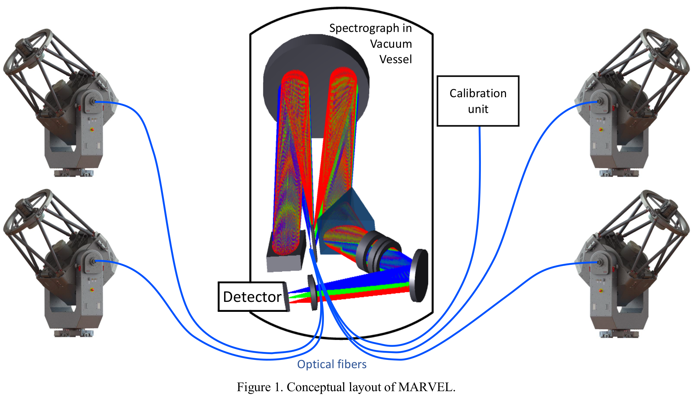

Welcome to MARVELsim’s documentation!¶
{kind=link}
Since the first discovery of a planet outside of our Solar System in 1995, the exoplanet research has shifted from detecting to characterising worlds around other stars. The TESS (NASA, launched 2019) and PLATO mission (ESA, launch 2026) will find and constrain the size of thousands of exoplanets around bright stars all over the sky. Radial velocity measurements are needed to characterise the orbit and mass, and complete the picture of densities and composition of the exoplanet systems found. The ARIEL mission (ESA, launch 2028) will characterise exoplanet atmospheres with infrared spectroscopy. Characterisation of stellar activity using optical ground spectroscopy is key to retrieve the planet atmosphere spectral footprint in ARIELs spectra. To enable the scientific harvest of the TESS, PLATO and ARIEL space missions, the Institute of Astronomy will use MARVEL: Four telescopes are linked via optical fibers to a custom-built spectrograph, which is kept stable in a vacuum chamber to allow the simultaneous measurement of the radial motions of 4 stars. MARVEL is constructed by a KU Leuven-led collaboration funded by the FWO, with contributions from the UK, Austria, Australia, Sweden and Spain. For more information check out KU Leuven webpage for MARVEL and the SPIE paper on MARVEL. (Copyright to KU Leuven MARVEL page).